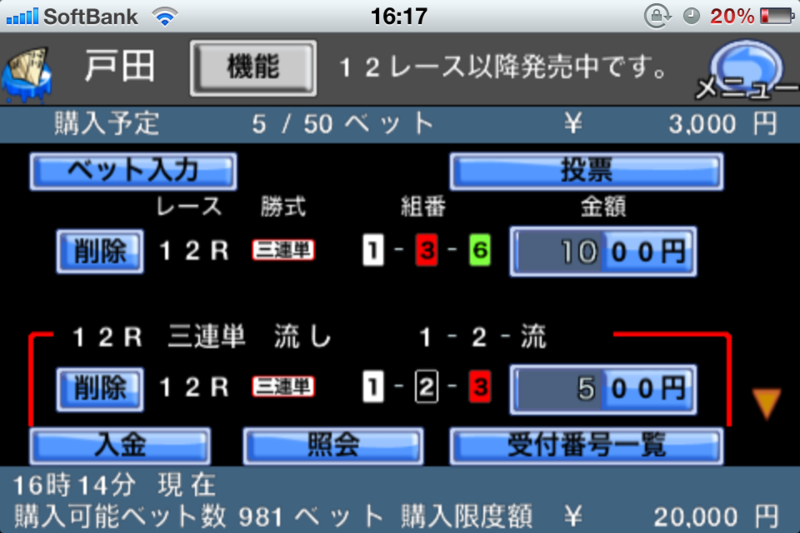

戸田競艇場に 15,000 円預けてきた ( ﾟдﾟ)､ﾍﾟｯ
公開日：

戸田競艇まで、総理大臣杯競走を観に行った。
カツを食って願掛けしたにもかかわらず、無残にも敗北した*1。寒いなか出張ってきたのに、ついていない。ちょっくらカネ稼いで、帰りにアキバで新しい iPad を買うつもりだったのだけど、その計画も潰えた。
まぁ、それはどうでもいい。済んだことだ。
戸田競艇場で困ったのは、周りにはコンビニがないこと。途中でコンビニでお金を補充したかったのだけど……場内にあるりそな銀行の ATM ではジャパンネット銀行のお金下ろせないし、所持金5,000円で途方にくれていた。
でも、わしはテレボート（インターネットで舟券が買えるサービス）の会員だったんだよね！ iPhone アプリで舟券が買えた。これは便利。ジャパンネットバンクからお金をチャージできるしね。そのおかげでギズが開いたとも言えるけど……！ 競艇場にはあんまり大金を持って行きたくない*2ので、こういうアプリは現場でも活用していきたい。アプリを起動するごとにログインが必要なのはちょっとメンドクサイけど。

今度は桐生か平和島あたりでリベンジするつもり。お金は預けただけだからな ( ｰ`дｰ´)ｷﾘｯ